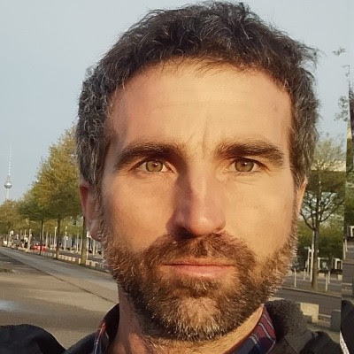

Guido Sbrogiò
Space Architect | Sci-fi writer
SSA Analyst | EO & GEOINT Consultant
>> Profile
Astrophysicist by training, I graduated in Physics at the University of Padova (IT) with a thesis carried out at the National Institute of Nuclear Physics (INFN-LNL) laboratories aimed at the design and construction of a microdosimetric detector for the International Space Station (ISS) in order to asses the biological radiation damage. I later specialised in science communication with a master's degree at the SISSA International School in Trieste. I like to explore new scientific and technological frontiers trying to bring out the social impact of scientific research. I have collaborated with the editorial staff of MediaINAF writing articles on astronomy and astrophysics. I acquired In-depth knowledge of spacecraft design for planetary remote sensing and space astrophysical observatories completing the Space Missions Science, Design and Applications (SPICES) master at the University of Bologna (IT). Planetary surface exploration and interplanetary mission design were the two key topics of my educational objectives that motivated my enrollment at the master SpacE Exploration and Development Systems (SEEDS) of the Polytechnic University of Turin with the aim of test technologies, operations and capabilities on the Moon to in order to develop and design future human mission to Mars. Currently I’m informally collaborating with the science team of the LIFE (Large Interferometer For Exoplanets) project for future research and characterisation of the biosignatures of Earth's exoplanets and for the development of new technologies for astrophysics and space engineering.